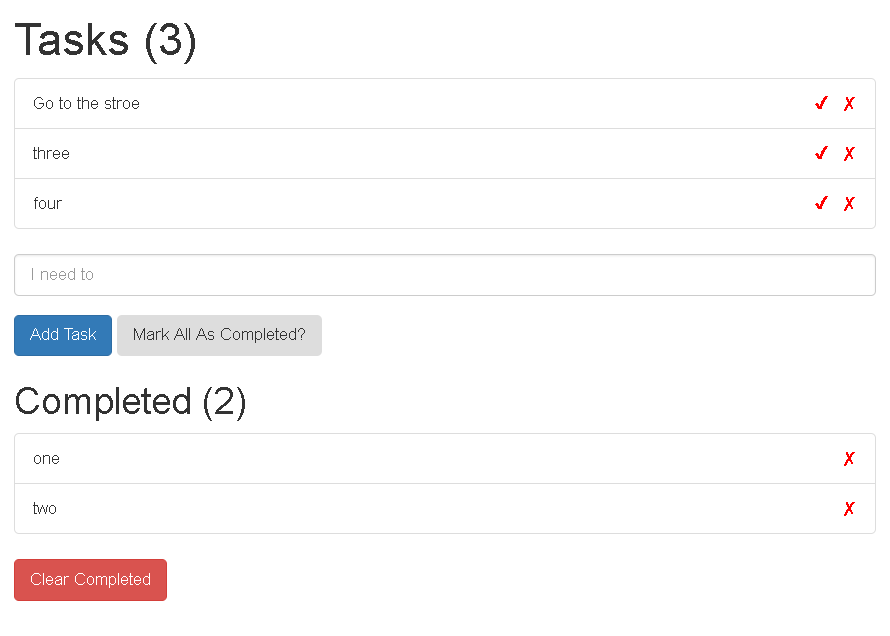

vue2的入门
开始梳理一下vue2的入门，主要还是一些模块的使用，反正vue2就是路由和模块
vue2 getstart vue实例
通过下面语句可以动态查看data
1 | <pre>{{$data | json}} </pre> |
你也可以自定义一个json的filters ，方法同methods
有时候删除不一定要定义methods 也可以用filters
老外的那个例子来讲些vue基础
主要讲解用到了
1 | v-bind |
过滤器|只用在mustache和v-bind表达式中，在v-for中用的话写一个computed
做一个，todolist的例子，实现增删改功能。
上面部分是tasks，下面部分是完成打钩的tasks。

创建一个 Vue 实例以及数据与方法
v-bind和v-model都是双向绑定，但v-model特别的用在表单中就好了，v-bind也可以用在表单，用来动态绑定value
当一个 Vue 实例被创建时，它向 Vue 的响应式系统中加入了其 data 对象中能找到的所有的属性。
只有当实例被创建时 data 中存在的属性才是响应式的，
1 | <div>{{meg}}</div> |
关于使用Object.freeze(obj)来阻止响应式，如果这个data是放在vue的data中该怎么freeze？
比如上面的msg，我总不能也在vue实例外面var一个吧，然后freeze。
官网的例子是可以freeze的。
1 | var obj = { |
除了数据属性，Vue 实例还暴露了一些有用的实例属性与方法，它们都有前缀 $，以便与用户定义的属性区分开来
1 | var data = { a: 1 } |
vue lifecycle
可以通过例子vuelifecycyle.html来观察
beforecreate : 可以在这加个loading事件
created ：在这结束loading，还做一些初始化，实现函数自执行
mounted ： 在这发起axios请求，拿回数据，配合路由钩子做一些事情
beforeDestory： destoryed ：当前组件已被删除，清空相关内容
模板语法 去HTML中了
插值 Mustache 和 v-bind(:) (一个用在文本，一个用在属性)
常见的数据绑定就是使用“Mustache”语法 (双大括号) 的文本插值
1 | <span>Message: {{ msg }}</span> |
上面Mustache 语法用在文本上，不能作用在 HTML 特性（属性）上，遇到这种情况应该使用 v-bind 指令：
1 | <div v-bind:id="dynamicId"></div> |
上面两者都只能使用单个js表达式，事实上所有v-指令除了v-for都是。
指令么暂时 v-if v-show v-for v-on(@)
参数
再说下布尔值 truthy和falsy。falsy有5种：0，false，undefined， null， ‘’
还有别的参数，就当变量好了：串，函数
修饰符 缩写
又回到vue实例中：计算属性和观察者
1 | new Vue({ |
从刚开始的 el data
后面还有 filters
现在加上 computed methods watch 三者区别看史上最详细 VUE2.0 全套 demo 讲解 基础3（计算属性）
一.computed前面说了是适用于对多数据变动进行监听，然后来维护一个状态，就是返回一个状态
二.watch是对一个数据监听，在数据变化时，会返回两个值 ，一个是value(当前值)，二个是oldvalue是变化前的值，我们可以通过这些变化也可以去维护一个状态，但是不符合场景，主要用于什么地方呢？主要用于监听一个数据来进行复杂的逻辑操作,如图片加载完ajax，开销大的
当然别忘了lifecycle的 created mounted updated destroyed 以及他们对应的before
在模板中（mustache），对于任何复杂逻辑，你都应当使用计算属性
官网例子1
2
3
4
5
6
7
8
9
10
11
12
13
14
15
16
17
18
19
20
21
22
23<div id="example">
{{ message.split('').reverse().join('') }} //太多了
</div>
//改写为
<div id="example">
<p>Original message: "{{ message }}"</p>
<p>Computed reversed message: "{{ reversedMessage }}"</p> //这就清楚多了
</div>
var vm = new Vue({
el: '#example',
data: {
message: 'Hello'
},
computed: {
// 计算属性的 getter
reversedMessage: function () {
// `this` 指向 vm 实例
return this.message.split('').reverse().join('')
}
}
})
计算属性的 setter
计算属性默认只有 getter ，不过在需要时你也可以提供一个 setter ：
1 | // 注意这里的写法和默认只有get的写法稍有不同 |
计算属性缓存 vs 方法
计算属性(computed)是基于它们的依赖进行缓存的。计算属性只有在它的相关依赖发生改变时才会重新求值。
方法(mtehods)：每当触发重新渲染时，调用方法将总会再次执行函数
计算属性 vs 侦听属性
侦听属性:当你有一些数据需要随着其它数据变动而变动时.通常更好的做法是使用计算属性而不是命令式的 watch 回调.当需要在数据变化时执行异步或开销较大的操作时，这个方式是最有用的
官网例子1
2
3
4
5
6
7
8
9
10
11
12
13
14
15
16
17
18
19
20
21
22
23
24
25
26
27
28
29
30
31
32
33
34
35
36
37
38
39
40
41
42
43
44
45
46
47
48
49
50
51
52
53<div id="watch-example">
<p>
Ask a yes/no question:
<input v-model="question">
</p>
<p>{{ answer }}</p>
</div>
<!-- 因为 AJAX 库和通用工具的生态已经相当丰富，Vue 核心代码没有重复 -->
<!-- 提供这些功能以保持精简。这也可以让你自由选择自己更熟悉的工具。 -->
<script src="https://cdn.jsdelivr.net/npm/axios@0.12.0/dist/axios.min.js"></script>
<script src="https://cdn.jsdelivr.net/npm/lodash@4.13.1/lodash.min.js"></script>
<script>
var watchExampleVM = new Vue({
el: '#watch-example',
data: {
question: '',
answer: 'I cannot give you an answer until you ask a question!'
},
watch: {
// 如果 `question` 发生改变，这个函数就会运行
question: function (newQuestion, oldQuestion) {
this.answer = 'Waiting for you to stop typing...'
this.getAnswer()
}
},
methods: {
// `_.debounce` 是一个通过 Lodash 限制操作频率的函数。
// 在这个例子中，我们希望限制访问 yesno.wtf/api 的频率
// AJAX 请求直到用户输入完毕才会发出。想要了解更多关于
// `_.debounce` 函数 (及其近亲 `_.throttle`) 的知识，
// 请参考：https://lodash.com/docs#debounce
getAnswer: _.debounce(
function () {
if (this.question.indexOf('?') === -1) {
this.answer = 'Questions usually contain a question mark. ;-)'
return
}
this.answer = 'Thinking...'
var vm = this
axios.get('https://yesno.wtf/api')
.then(function (response) {
vm.answer = _.capitalize(response.data.answer)
})
.catch(function (error) {
vm.answer = 'Error! Could not reach the API. ' + error
})
},
// 这是我们为判定用户停止输入等待的毫秒数
500
)
}
})
</script>
Class 与 Style 绑定 又回到模板中
都是属性啊，所以用v-bind，而且表达式结果的类型除了字符串之外，还可以是对象或数组
注意对象是key:value 数组时value 反正就是看对value就行
class
对象1
2
3
4
5
6
7
8
9
10
11
12
13
14
15
16
17
18
19
20
21
22
23
24
25
26
27
28
29
30
31
32
33
34
35
36//这就是对象了 ={} key:value 本来是字符串=""
<div v-bind:class="{ active: isActive }"></div>
//多个
<div class="static"
v-bind:class="{ active: isActive, 'text-danger': hasError }">
</div>
data: {
isActive: true,
hasError: false
}
//当然也可以直接就写个对象名
<div v-bind:class="classObject"></div>
data: {
classObject: {
active: true,
'text-danger': false
}
}
//常用的还有写成computed的
data: {
isActive: true,
error: null
},
computed: {
classObject: function () {
return {
active: this.isActive && !this.error,
'text-danger': this.error && this.error.type === 'fatal'
}
}
}
数组
1 | //数组 =[] 稍微和对象不一样哦这里只有value |
style (会自动添加浏览器前缀)
对象1
2
3
4
5
6
7
8
9
10
11
12
13
14
15
16
17//CSS 属性名可以用驼峰式 (camelCase) 或短横线分隔 (kebab-case，记得用单引号括起来) 来命名，不推荐
<div v-bind:style="{ color: activeColor, fontSize: fontSize + 'px' }"></div>
data: {
activeColor: 'red',
fontSize: 30
}
//直接绑定到一个样式对象通常更好，这会让模板更清晰：
<div v-bind:style="styleObject"></div>
data: {
styleObject: {
color: 'red',
fontSize: '13px'
}
}
//同样的，对象语法常常结合返回对象的计算属性使用
数组
1 | //v-bind:style 的数组语法可以将多个样式对象应用到同一个元素上： |
当然他们还有在组件中应用，暂时不说
接着说指令了，开始v-if v-show v-for -v-on
条件渲染 先说v-if v-show
看代码就明白了 v-if
1 | //针对一个元素 v-if v-else-if v-else 一个表示就一个根节点 |
再说下key，上面的没加key是会复用的，所以会发生不会清除用户已经输入内容的情况
key表示”这两个元素是完全独立的，不要复用它们”
1 | <template v-if="loginType === 'username'"> |
v-show
1 | //只有一种形式，不多对于多个的只需要在父节点处用v-show就行了，反正不用同级的 |
v-if vs v-show
v-if 是“真正”的条件渲染，因为它会确保在切换过程中条件块内的事件监听器和子组件适当地被销毁和重建。
v-if 也是惰性的：如果在初始渲染时条件为假，则什么也不做——直到条件第一次变为真时，才会开始渲染条件块。
相比之下，v-show 就简单得多——不管初始条件是什么，元素总是会被渲染，并且只是简单地基于 CSS 进行切换display:none。
一般来说，v-if 有更高的切换开销，而 v-show 有更高的初始渲染开销。因此，如果需要非常频繁地切换，则使用 v-show 较好；如果在运行时条件很少改变，则使用 v-if 较好。
v-if 与 v-for 一起使用
当 v-if 与 v-for 一起使用时，v-for 具有比 v-if 更高的优先级
列表渲染 也就是v-for 优先级比v-if高
当然这个使用在对数组[] 以及对象的 \{\}
用 v-for 把一个数组对应为一组元素
在 v-for 块中，我们拥有对父作用域属性的完全访问权限
2种方式。一个是v-for=”item in items” items 是源数据数组并且 item 是数组元素迭代的别名
一个是v-for=”(item, index) in items”
1 | //第一种只有value |
一个对象对应为一组元素
这就有3种了 毕竟对象有key: value 不过这里按 value key index 理由当然也是先拿value咯,不过还是按key的顺序哦
在遍历对象时，是按 Object.keys() 的结果遍历，但是不能保证它的结果在不同的 JavaScript 引擎下是一致的。
第1种是v-for=”value in object”
第2种是v-for=”(value, key) in object”
第3种是v-for=”(value, key, index) in object”
1 | // |
key，当然表示唯一咯，同v-if啦
建议尽可能在使用 v-for 时提供 key
理想的 key 值是每项都有的且唯一的 id，它的工作方式类似于一个属性，所以你需要用 v-bind 来绑定动态值。
一般在数组或对象中提供了
1 | <div v-for="item in items" :key="item.id"> |
它是 Vue 识别节点的一个通用机制，key 并不与 v-for 特别关联，key 还具有其他用途，我们将在后面的指南中看到其他用途
数组更新检测(其实不用管这个，v-for还是会触发视图更新)
变异方法 就是改变原数组咯
- push()
- pop()
- unshift()
- shift()
- reverse()
- sort()
- splice()
- clear()
替换数组 就是返回一个新数组咯
filter(), concat() 和 slice() map()
有2种情况下数组检测不到更新(因为js的限制，要换方法使用)
- 当你利用索引直接设置一个项时，例如：vm.items[indexOfItem] = newValue
- 当你修改数组的长度时，例如：vm.items.length = newLength
看下面 我觉得统一下 用splice好了1
2
3
4
5
6
7
8为了解决第一类问题，以下两种方式都可以实现和 vm.items[indexOfItem] = newValue 相同的效果，同时也将触发状态更新：
// Vue.set
Vue.set(example1.items, indexOfItem, newValue)
// Array.prototype.splice
example1.items.splice(indexOfItem, 1, newValue)
为了解决第二类问题，你可以使用 splice：
example1.items.splice(newLength)
上面是数组的增删，可以检测到，但对象属性的增删(又由于JS限制，检测不到。增加一个属性或多个属性)
就是不对根级别添加，而是对根里面嵌套的对象的添加
1 | 还是由于 JavaScript 的限制，Vue 不能检测对象属性的添加或删除： |
对于已经创建的实例，Vue 不能动态添加根级别的响应式属性。但是，可以使用 Vue.set(object, key, value) 方法向嵌套对象添加响应式属性。例如，对于
1 |
|
有时你可能需要为已有对象赋予多个新属性，比如使用 Object.assign() 或 _.extend()。在这种情况下，你应该用两个对象的属性创建一个新的对象。所以，如果你想添加新的响应式属性，不要像这样：
1 | Object.assign(this.userProfile, { |
v-for 显示过滤/排序结果(这个用不来filters，用computed，methods)
数组
有时，我们想要显示一个数组的过滤或排序副本，而不实际改变或重置原始数据。在这种情况下，可以创建返回过滤或排序数组的计算属性。
例如：1
2
3
4
5
6
7
8
9
10
11<li v-for="n in evenNumbers">{{ n }}</li>
data: {
numbers: [ 1, 2, 3, 4, 5 ]
},
computed: {
evenNumbers: function () {
return this.numbers.filter(function (number) {
return number % 2 === 0
})
}
}
在计算属性不适用的情况下 (例如，在嵌套 v-for 循环中) 你可以使用一个 method 方法：
1 | <li v-for="n in even(numbers)">{{ n }}</li> //可以看到这里不同 |
一段取值范围的 v-for 整数
v-for 也可以取整数。在这种情况下，它将重复多次模板。
1 | <div> |
v-for on a <template> 多个同级，上面是一个根元素
类似于 v-if，你也可以利用带有 v-for 的 渲染多个元素。比如：
1 | <ul> |
v-for with v-if 前面说的优先级问题，在同一个标签上v-for高
当它们处于同一节点，v-for 的优先级比 v-if 更高，这意味着 v-if 将分别重复运行于每个 v-for 循环中。当你想为仅有的一些项渲染节点时，这种优先级的机制会十分有用，如下：
1 | <li v-for="todo in todos" v-if="!todo.isComplete"> |
上面的代码只传递了未完成的 todos。
而如果你的目的是有条件地跳过循环的执行，那么可以将 v-if 置于外层元素 (或 )上。如：
这里没啥优先级而言，都不在一个元素标签上
1 | <ul v-if="todos.length"> |
组件的v-for （看完组件那块再回来体会）
在自定义组件里，你可以像任何普通元素一样用 v-for 。用法不变,key一定要加 （但是这种做法错误的哦）。1
<my-component v-for="item in items" :key="item.id"></my-component>
重点
因为任何数据都不会被自动传递到组件里，因为组件有自己独立的作用域。为了把迭代数据传递到组件里，我们要用 props ：
1 | //上面的要改为这样写 |
不自动将 item 注入到组件里的原因是，这会使得组件与 v-for 的运作紧密耦合。明确组件数据的来源能够使组件在其他场合重复使用
下面是一个简单的 todo list 的完整例子：1
2
3
4
5
6
7
8
9
10
11
12
13
14
15
16<div id="todo-list-example">
<input
v-model="newTodoText"
v-on:keyup.enter="addNewTodo"
placeholder="Add a todo"
>
<ul>
<li
is="todo-item" //这里不是<todo-item> </todo-item>
v-for="(todo, index) in todos"
v-bind:key="todo.id"
v-bind:title="todo.title" //这里title 在组件中的props中绑定，todo.title才是变量名
v-on:remove="todos.splice(index, 1)"
></li>
</ul>
</div>
注意这里的 is=”todo-item” 属性。这种做法在使用 DOM 模板时是十分必要的，因为在 <ul> 元素内只有 <li> 元素会被看作有效内容。这样做实现的效果与
类似的还有在<ul>、<ol>、<table>、<select>
当然有办法不这么麻烦 最简单的就是使用vue-cli咯
如果使用来自以下来源之一的字符串模板，则没有这些限制：
<script type="text/x-template">- JavaScript 内联模板字符串
- .vue 组件
因此，请尽可能使用字符串模板。
1 | Vue.component('todo-item', { |
事件处理 （到v-on了 @ 这个是监听事件，不是触发）
可以用 v-on 指令监听(on) DOM 事件，并在触发时(emit)运行一些 JavaScript 代码。
示例：1
2
3
4
5
6
7
8
9
10<div id="example-1">
<button v-on:click="counter += 1">Add 1</button> //这里把方法直接写在""内了
<p>The button above has been clicked {{ counter }} times.</p>
</div>
var example1 = new Vue({
el: '#example-1',
data: {
counter: 0
}
})
更常见的，直接写一个方法名称
然而许多事件处理逻辑会更为复杂，所以直接把 JavaScript 代码写在 v-on 指令中是不可行的。因此 v-on 还可以接收一个需要调用的方法名称。
1 | <div id="example-2"> |
除了直接绑定到一个方法，也可以在内联 JavaScript 语句中调用方法(传入参数就用好了)：1
2
3
4
5
6
7
8
9
10
11
12<div id="example-3">
<button v-on:click="say('hi')">Say hi</button> <!-- 直接传入参数用了 -->
<button v-on:click="say('what')">Say what</button>
</div>
new Vue({
el: '#example-3',
methods: {
say: function (message) {
alert(message)
}
}
})
有时也需要在内联语句处理器中访问原始的 DOM 事件(这里是button)。可以用特殊变量 $event 把它传入方法：
1 | <button v-on:click="warn('Form cannot be submitted yet.', $event)"> |
一个小例子说明event.preventDefault()来阻止默认事件的发生，event.stopPropagation()阻止事件的冒泡
比如<a>点击它会发生跳转，用了preventDefault()之后就不跳转了,但会向上冒泡。
1 | <div class="box"> |
总结
1.event.stopPropagation()方法
这是阻止事件的冒泡方法，不让事件向documen上蔓延，但是默认事件仍然会执行，当你掉用这个方法的时候，如果点击一个连接，这个连接仍然会被打开，
2.event.preventDefault()方法
这是阻止默认事件的方法，调用此方法是，连接不会被打开，但是会发生冒泡，冒泡会传递到上一层的父元素；
3.return false ；
这个方法比较暴力，他会同时阻止事件冒泡也会阻止默认事件；写上此代码，连接不会被打开，事件也不会传递到上一层的父元素；可以理解为return false就等于同时调用了event.stopPropagation()和event.preventDefault()
不懂event.preventDefault()可以看下这个链接
阻止事件冒泡，阻止默认事件，event.stopPropagation()和event.preventDefault()，return false的区别
浅谈js中事件preventDefault()和addEventListener()
v-on事件修饰符（接着上面的event.preventDefault()和event.stopPropagation()）
在事件处理程序中调用 event.preventDefault() 或 event.stopPropagation() 是非常常见的需求。尽管我们可以在方法中轻松实现这点，但更好的方式是：方法只有纯粹的数据逻辑，而不是去处理 DOM 事件细节。
修饰符是由点开头的指令后缀来表示的，记5个
- stop (event.stopPropagation())
- prevent (event.preventDefault())
- capture
- self
- once (这个和前面介绍过的v-once一样，都只一次)
- passive (尤其能够提升移动端的性能。对应 addEventListener 中的 passive 选项)
1 | <!-- 阻止单击事件继续传播 就是event.stopPropagation()--> |
按键修饰符
记住所有的 keyCode 比较困难，所以 Vue 为最常用的按键提供了别名：
1 | <!-- 只有在 `keyCode` 是 13 时调用 `vm.submit()` --> |
全部的按键别名：
- enter
- tab
- delete (捕获“删除”和“退格”键)
- esc
- space
- up
- down
- left
- right
可以通过全局 config.keyCodes 对象自定义按键修饰符别名：
1 | // 可以使用 `v-on:keyup.f1` |
系统修饰键(这个只要有一个按下了就行，模糊，要精准加.exact修饰符)
请注意修饰键与常规按键不同，在和 keyup 事件一起用时，事件触发时修饰键必须处于按下状态。换句话说，只有在按住 ctrl 的情况下释放其它按键，才能触发 keyup.ctrl。而单单释放 ctrl 也不会触发事件。
可以用如下修饰符来实现仅在按下相应按键时才触发鼠标或键盘事件的监听器。
- ctrl
- alt
- shift
- meta (在 Mac 系统键盘上，meta 对应 command 键 (⌘)。在 Windows 系统键盘 meta 对应 Windows 徽标键 (⊞))
.exact 修饰符
.exact 修饰符允许你控制由精确的系统修饰符组合触发的事件。
1 | <!-- 即使 Alt 或 Shift 被一同按下时也会触发 --> |
鼠标按钮修饰符
- left
- right
- middle
这些修饰符会限制处理函数仅响应特定的鼠标按钮。
表单输入绑定v-model
也就单行 多行，单选 多选 下拉 5个
用 v-model 指令在表单 <input> 及 <textarea> 元素上创建双向数据绑定。
v-model 会忽略所有表单元素的 value、checked、selected 特性的初始值而总是将 Vue 实例的数据作为数据来源。你应该通过 JavaScript 在组件的 data 选项中声明初始值。
文本和多行文本
1 | 文本 |
单选
1 | 单选按钮 看下面单选多选，一组的 只要v-model绑定的名字一样就是一组的 不用写key，render后也没有key |
复选
注意，这5种就这个复选除了静态的字符串，还有个布尔值，其他4种静态的只有字符串。后面v-bind解放一切1
2
3
4
5
6
7
8
9
10
11
12
13
14
15
16
17
18
19
20
21
22
23
24单个复选框，绑定到布尔值：显示的是boolean值 false 和 true，
<input type="checkbox" id="checkbox" v-model="checked">
<label for="checkbox">{{ checked }}</label>
多个复选框，绑定到同一个数组：
<div id='example-3'>
<input type="checkbox" id="jack" value="Jack" v-model="checkedNames">
<label for="jack">Jack</label>
<input type="checkbox" id="john" value="John" v-model="checkedNames">
<label for="john">John</label>
<input type="checkbox" id="mike" value="Mike" v-model="checkedNames">
<label for="mike">Mike</label>
<br>
<span>Checked names: {{ checkedNames }}</span> //这里显示初始值是空的，而value值是点击选中后才有的
</div>
new Vue({
el: '#example-3',
data: {
checked: false,
checkedNames: []
}
})
选择框
1 | 单选时： |
如果 v-model 表达式的初始值未能匹配任何选项，<select> 元素将被渲染为“未选中”状态。在 iOS 中，这会使用户无法选择第一个选项。因为这样的情况下，iOS 不会触发 change 事件。因此，更推荐像上面这样提供一个值为空的禁用选项。
上面该讲的讲好了，下面做一些补充
用 v-for 渲染的动态选项：1
2
3
4
5
6
7
8
9
10
11
12
13
14
15
16
17<select v-model="selected">
<option v-for="option in options" v-bind:value="option.value">
{{ option.text }}
</option>
</select>
<span>Selected: {{ selected }}</span>
new Vue({
el: '...',
data: {
selected: 'A',
options: [
{ text: 'One', value: 'A' },
{ text: 'Two', value: 'B' },
{ text: 'Three', value: 'C' }
]
}
})
值绑定 v-bind稳的一笔
对于单选按钮，复选框及选择框的选项，v-model 绑定的值通常是静态字符串 (对于复选框也可以是布尔值)：
1 | <!-- 当选中时，`picked` 为字符串 "a" --> |
但是有时我们可能想把值绑定到 Vue 实例的一个动态属性上，这时可以用 v-bind 实现，并且这个属性的值可以不是字符串。
例子
1 | 单选按钮 |
修饰符 3个(.lazy, .number, .trim)
.lazy
在默认情况下，v-model 在每次 input 事件触发后将输入框的值与数据进行同步 (除了上述输入法组合文字时)。你可以添加 lazy 修饰符，从而转变为使用 change 事件进行同步：
1 | <!-- 一输入就变化 --> |
.number
如果想自动将用户的输入值转为数值类型(因为这5种绑定的默认都是静态的字符串啊)，可以给 v-model 添加 number 修饰符：
也会自动去除不是数字的内容
1 | <input v-model.number="age" type="number"> |
这通常很有用，因为即使在 type=”number” 时，HTML 输入元素的值也总会返回字符串。
.trim
如果要自动过滤用户输入的首尾空白字符，可以给 v-model 添加 trim 修饰符：
1 | <input v-model.trim="msg"> |
哈哈哈 3个一起用 顺序没关系1
<input v-model.lazy.number.trim="msg">